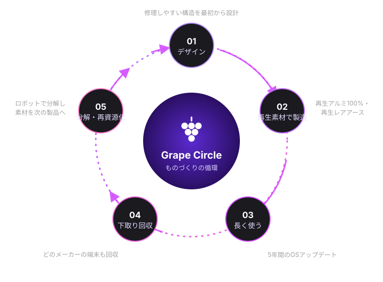

Grapeについて
一粒ずつ、
良いものを。
Grape株式会社は、学ぶ人とつくる人のためのデバイスをつくる、日本生まれのテクノロジー企業です。
ぶどうは、一粒ひと粒が集まって、ひとつの房になる。私たちの製品も同じです。ひとつひとつは小さくても、つながることで、あなたの毎日をもっと豊かにする。それが Grape という名前に込めた想いです。
大切にしていること
3つの約束。
01
シンプルであること
説明書がなくても使える。機能を足すより、迷いを減らすことを選びます。
02
長く使えること
5年間のOSアップデートと、修理しやすい設計。買い替えなくていい製品を目指します。
03
手が届くこと
良い道具は、学生にこそ必要です。学割と下取りで、最初の一台を応援します。
環境への取り組み
Grape Circle
デザインから再資源化まで。製品の一生をひとつの輪として設計し、2030年までにサプライチェーン全体のカーボンニュートラルを目指します。

代表メッセージ
会社概要
Company Profile
- 会社名
- Grape株式会社（Grape Inc.）※架空の企業です
- 設立
- 2024年4月1日
- 所在地
- 東京都港区（架空）
- 代表者
- 代表取締役 CEO
- 資本金
- 3億円
- 従業員数
- 128名（2026年11月現在）
- 事業内容
- スマートフォン・ノートPC・ウェアラブル機器の企画・設計・販売
クラウドサービス「Grape Cloud」および保証サービス「Grape Care+」の運営 - 主な対象
- 大学生・専門学校生、若手クリエイター、教育機関
- 店舗
- Grape Store 表参道、Grape オンラインストア（いずれも架空）
沿革
あゆみ
大学の研究室から創業
学生3人で、ワンルームの部屋からスタート。
Grape Buds 発売
最初の製品。クラウドファンディングで目標の12倍を達成。
初代 Vine を発売
再生アルミニウム100%の筐体を採用。
Grape Store 表参道 オープン
修理・下取りカウンターを併設した旗艦店。
Vine Pro 発表
自社設計の G1 チップを初搭載。